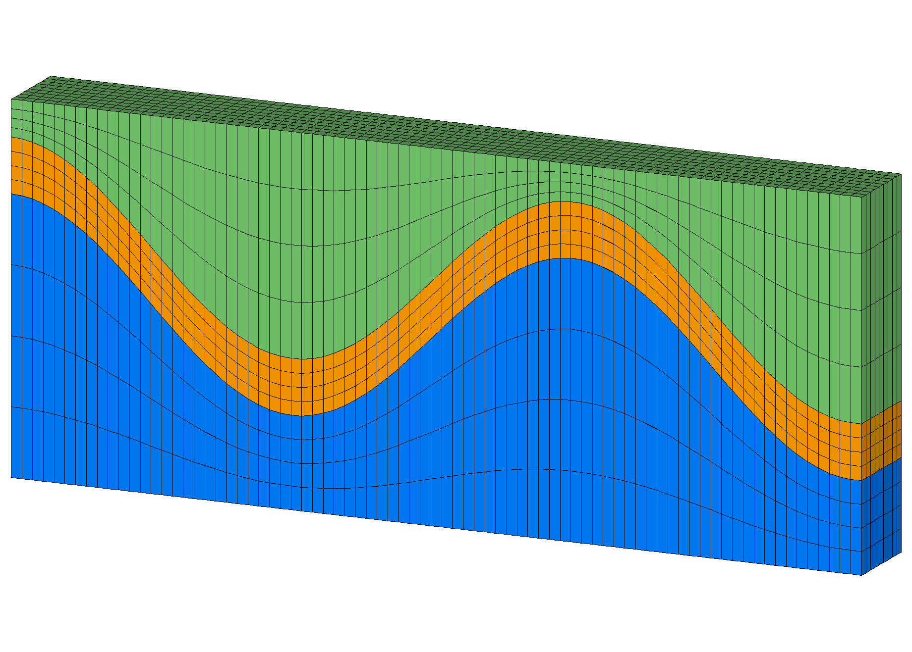
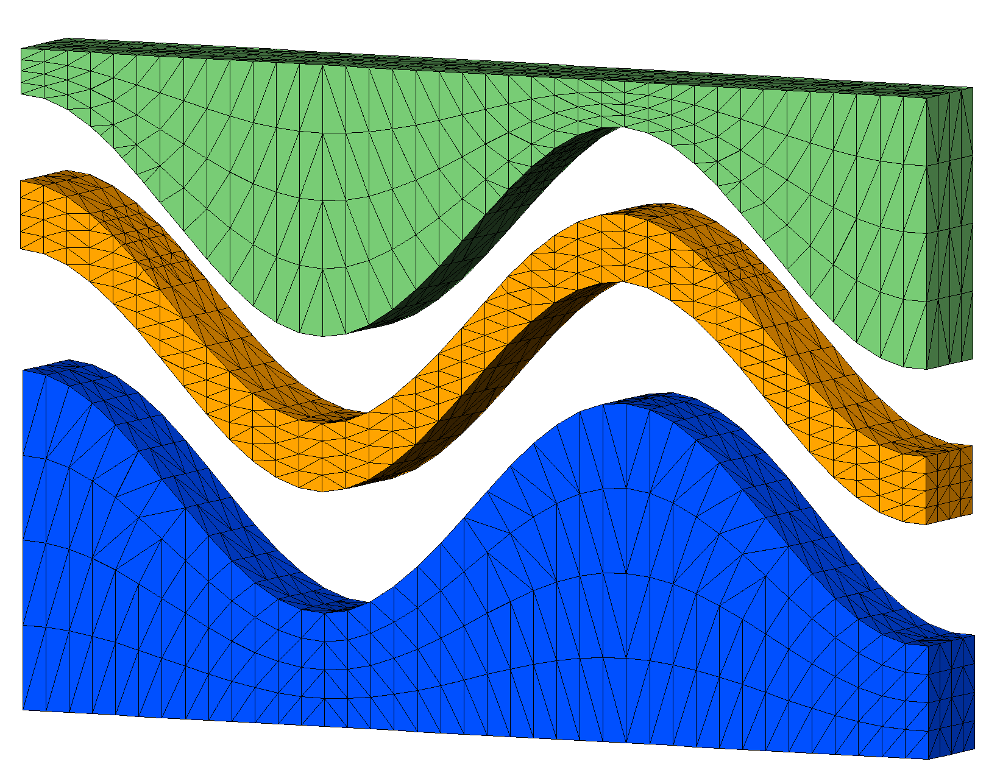

Example: 3D connect/check_interface with sloped interfaces
connect with input points from a convex hex mesh created with stack/layers.
This example has a thin layer formed from sloped internal interfaces. Bad elements are created across the internal interfaces resulting in “popped” tets.
This example is fixed by using connect/check_interface. This option requires mesh object geometry as defined by the region and mregion commands. If geometry is not defined, check_interfaces will behave as if there are no internal interfaces.
 Step 2. Stack surfaces into hex mesh
Step 3. Define geometry for the tetrahedral mesh
Step 4. Connect points into tetrahedral mesh
 Step 5. Interpolate hex colors to tet mesh
LaGriT input command file with all steps: wave_connect_check.in.txt
LaGriT output report for all steps: wave_connect_check.out.txt
Step 1 Create Surfaces
Use createpts to create boundary and internal interfaces. These surfaces will also be used to define the mesh geometry in latter steps.
Commands to create quad surfaces
# spacing near .25 define / XMAX / 9.5 define / YMAX / 1. define / NX / 40 define / NY / 5 define HEX_MESH hex.gmv define TET_MESH tet.gmv cmo / create / mosurf / / / quad quadxy /NX NY/0. 0. 0./ XMAX 0. 0./XMAX YMAX 0./0. YMAX 0./ 1 1 1 createpts/brick/xyz/NX,NY,1/1 0 0 / connect cmo / setatt / mosurf / imt / 1 0 0 / 1 cmo / setatt / mosurf / itetclr / 1 0 0 / 1 resetpts / itp math/cos/mosurf/zic/1,0,0/mosurf/xic cmo / printatt / mosurf / -xyz- / minmax dump / surf_wave.inp / mosurf
Commands to make surfaces for stacking
Use the quad surface to assign Z values for layers to stack. The top and bottom of this mesh will be flat. There are 2 wave surfaces being used as internal interfaces for the middle material. These will be used to define the mesh geometry as required by the check_interface option of connect.
# these are the values for flat top and flat bottom define ZBOT 0. define ZTOP 4. # these are translate values for vertical spacing define S1 2. define S2 .6 cmo select mosurf trans /1,0,0/ 0. 0. 0./ 0. 0. S1 dump / surf_wave_low.inp / mosurf trans /1,0,0/ 0. 0. 0./ 0. 0. S2 dump / surf_wave_high.inp / mosurf cmo/setatt/mosurf/ zic/ ZBOT dump / surf_flat_bot.inp / mosurf cmo/setatt/mosurf/ zic/ ZTOP dump / surf_flat_top.inp / mosurf
Step 2 Stack Hex Mesh
The stack/layers command reads the four surfaces that were written. Material ids are assigned and refinement layers are created between input surfaces that will detirmine the vertical resolution. Write this hex mesh and use it to interpolate material ids on to the tet mesh when done.
Commands to stack layers into a hex mesh
# Stack layers from bottom to top with vertical refinement cmo/create/mo_stack stack/layers/avs/ & surf_flat_bot.inp 1 & surf_wave_low.inp 2 3 & surf_wave_high.inp 3 3 & surf_flat_top.inp 3 3 # connect stacked layers into 3D elements stack/fill/mohex / mo_stack resetpts/itp # write information about this mesh object cmo/printatt/mohex/-xyz- minmax quality # check hex volumes cmo/addatt/mohex/volume hex_vol cmo/printatt/mohex/hex_vol minmax eltset/ ebad / hex_vol/le 0. dump HEX_MESH mohex
Output stacked hex mesh
For this example there are flat top and bottom layers plus 2 internal layers to seperate materials. The vertical spacing between these input layers are refined proportionally by adding refine layers.
- Bottom (yellow), internal interfaces (green), top (red)
- Blue surfaces are the added proportional layers.

surface name layer color type llcorner zic
surf_flat_bot.inp 1 1 -1 1) 0.000000E+00
refine 2 1 2 801) 7.500000E-01
refine 3 1 2 1601) 1.500000E+00
refine 4 1 2 2401) 2.250000E+00
surf_wave_low.inp 5 2 0 3201) 3.000000E+00
refine 6 2 2 4001) 3.150000E+00
refine 7 2 2 4801) 3.300000E+00
refine 8 2 2 5601) 3.450000E+00
surf_wave_high.inp 9 3 0 6401) 3.600000E+00
refine 10 3 2 7201) 3.700000E+00
refine 11 3 2 8001) 3.800000E+00
refine 12 3 2 8801) 3.900000E+00
surf_flat_top.inp 13 3 -2 9601) 4.000000E+00
Elements per layer: 711 stacked total: 9243
Nodes per layer: 800 stacked total: 10400
No Truncating layer specified.
files read: 4 from total: 4
The stacked layers are connected into hex elements.
The quality and cmo/addatt/cmo/volume commands are used to check that volumes are positive.

Step 3 Set Geometry
Read the surfaces used to define material interfaces for the hex mesh, and use them to define the mesh geometry that will be used by connect/check_interface. The geometry is defined by regions above and below the surfaces. Here we set region 2 r2 and mregion 2 mr2 as the volume between surf_wave_low.inp and surf_wave_high.inp. The interfaces will be equal to these surfaces.
# GEOMETRY defined for tet mesh cmo/create/motet copypts/motet/mohex # define geometry using surfaces used in stack read avs surf_wave_low.inp mos1 read avs surf_wave_high.inp mos2 cmo select motet surface/slow/intrface/sheet/ mos1 surface/shigh/intrface/sheet/ mos2 # define regions # interfaces must have exactly one region region/r1/ lt slow region/r2/ ge slow and le shigh region/r3/ gt shigh # define material regions # exclude internal interfaces mregion/mr1/ lt slow mregion/mr2/ gt slow and lt shigh mregion/mr3/ gt shigh
Step 4 Connect
Copy the hex points into a new mesh object and connect into tetrahedrals. The check_interface option will add points as necessary to maintain the defined interfaces.
Commands to connect
# set some defaults for the connect routine filter / 1 0 0 rmpoint / compress setpts dump gmv tmp_input_nodes.gmv motet cmo/printatt/motet/imt minmax # connect and check interface connections connect / check_interface
The command setpts will assign imt material values as defined in the region and mregion commands. Use this to check that the mesh geometry has beed defined as intended.
setpts FOR imt= 1 NAME= mr1 THERE ARE 800 POINTS FOR imt= 2 NAME= mr2 THERE ARE 600 POINTS FOR imt= 3 NAME= mr3 THERE ARE 800 POINTS FOR imt= 4 NAME= intrface THERE ARE 400 POINTS
Image shows the input points as colored by imt values set in the setpts command. The result is 600 points in region mr2 with imt=2, there are 800 points in the top and bottom regions. The imt=4 values (red) are points on the interface between region 2 and the other regions.
Output Connected Tet Mesh
connect/check_interface
Coordinates of enclosing tetrahedron are:
-0.19000D+02 -0.75000D+00 -0.30000D+01
0.47500D+01 -0.75000D+00 0.17000D+02
0.28500D+02 -0.75000D+00 -0.30000D+01
0.47500D+01 0.42500D+01 0.20000D+01
Candidate connections that may cross boundaries = 72
Adding 72 points to break multimaterial connections
Points 2601 - 2672 are being added to break multimaterial connections.
Successfully eliminated all multimaterial connections.
The mesh is now complete!
LaGriT FINISH: connect
The LaGriT output report and image show that points were added to maintain the material interfaces. The added nodes are shown in the images as black dots. Click on image to enlarge. The tet elements are colored based on the 4 regions, mr1 (blue), mr2 (green), mr3 (lime), interface (red).
Step 5 Interpolate
Commands to interpolate hex materials to tet materials
The hex mesh with 3 materials can be interpolated on to the tet mesh.
# interpolate element materials from hex mesh interpolate/map/motet itetclr/1,0,0/mohex itetclr resetpts / itp # report mesh quality and check for neg ccoefs quality cmo/addatt/motet/volume/tet_vol cmo/addatt/motet/voronoi_volume/vor_vol cmo/printatt/motet/tet_vol/minmax cmo/printatt/motet/vor_vol/minmax dump TET_MESH motet finish
Output Colored Tet Mesh

{kind=link}
{kind=link}
{kind=link}
The mesh has 3 materials interpolated from the hex mesh and has internal interfaces conforming to the input surfaces.
elements with aspect ratio b/w .2 and .5 : 235 elements with aspect ratio b/w .5 and 1. : 11381 min aspect ratio = 0.3142E+00 max aspect ratio = 0.8686E+00 element volumes b/w 0.1533E-03 and 0.3386E-03: 56 element volumes b/w 0.3386E-03 and 0.7481E-03: 380 element volumes b/w 0.7481E-03 and 0.1653E-02: 4520 element volumes b/w 0.1653E-02 and 0.3651E-02: 2244 element volumes b/w 0.3651E-02 and 0.8067E-02: 4416 min volume = 1.5327704E-04 max volume = 8.0668142E-03 ATTRIBUTE NAME MIN MAX DIFFERENCE LENGTH tet_vol 1.532770444E-04 8.066814185E-03 7.913537141E-03 11616 vor_vol 7.612179487E-04 4.559428664E-02 4.483306869E-02 2672 AMatbld3d_stor: Matrix compress_eps: 0.1000000E-07 AMatbld3d_stor: Local epsilon: 0.1000000E-14 AMatbld3d_stor: *****Zero Negative Coefficients ****** AMatbld3d_stor: npoints = 2672 ncoefs = 22504 AMatbld3d_stor: Number of unique coefs = 12588 AMatbld3d_stor: Maximum num. connections to a node = 17 AMatbld3d_stor: Volume min = 7.6121795E-04 AMatbld3d_stor: Volume max = 4.5594287E-02 AMatbld3d_stor: Total Volume: 3.8000000E+01
The LaGriT output reports mesh statistics. All element volumes are positive, aspect ratios are acceptable, node voronoi volumes are positive, and there are no negative coupling coefficients.